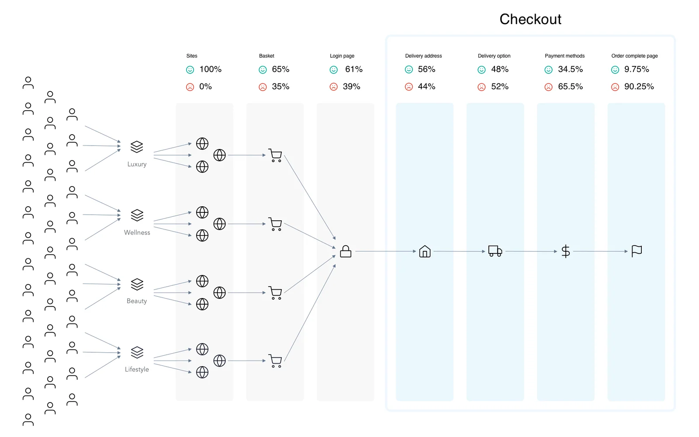
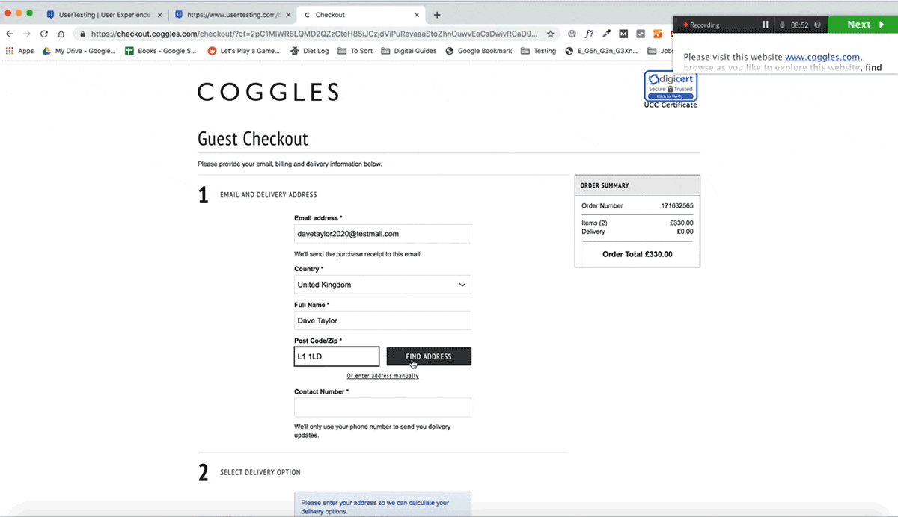
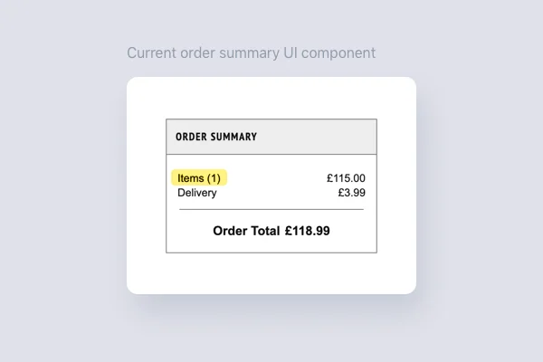

To better understand users' problems, I’ve reached out to the broader team. I’ve interviewed researchers, data analysts, product managers and engineers. That helped me to answer the following questions:
- What obstacles users have?
- Why do users get confused or anxious, when they can no longer proceed?
- How do users behave, where do they stop and drop-off?
On mobile devices, the layout of the old checkout was a traditional multi-step journey. On desktop, it was a one-step long scrolling page. The biggest pitfall of one-step checkout was that when wanting to scan the order data, users had to scroll up to review what they’ve typed directly in the active form fields. Stats showed that the old checkout has a high number of errors in address fields and payments method area.

A high-level overview of the journey where is visible that majority of people drop-off when selecting delivery options and payment methods.
It was interesting to learn that going backwards in the flow to edit data is often a significant hassle both for guest users and existing account holders.
Similar cases
I investigated previous attempts that aimed to improve the checkout experience. I've read articles and reports by Baymard Institute. These articles are based on nine years of observations and test findings from usability research on e-Commerce checkout processes and abandonment rates. I watched talks and listened to podcasts like Reinventing PayPal’s checkout by Bill Scott. And I’ve participated in Google’s UX marathon to learn best practices for mobile checkout.

А recording of the user testing of the previous version.
Working together with the UX researcher Loc Phan, I designed a scenario for the remote unmoderated usability test. The main objective for the test was to compare existing version versus the nine biggest competitors. We recruited participants and asked them to complete checkout process on our and competitors' websites.
During the usability study, people were complaining that they can't find the order summary. People want to see the name and image of an item and full price breakdown. The old checkout didn't display full order summary. Things got worse on mobile version where order summary was presented at the last step of the checkout.

The order summary wasn't informative for users because people wanted to see the item name along with the image, as well as delivery details.
Interestingly the data showed that typically people with lower order value first look for the delivery cost.